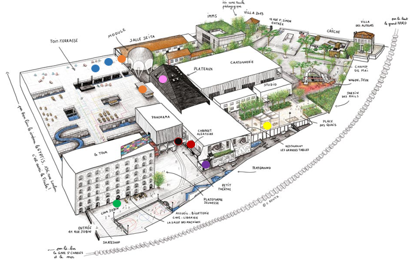
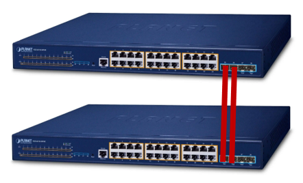
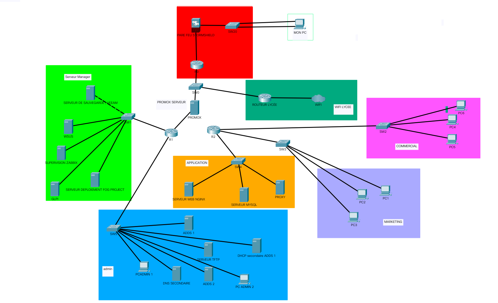
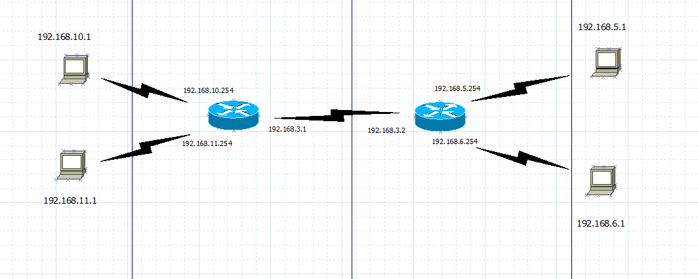
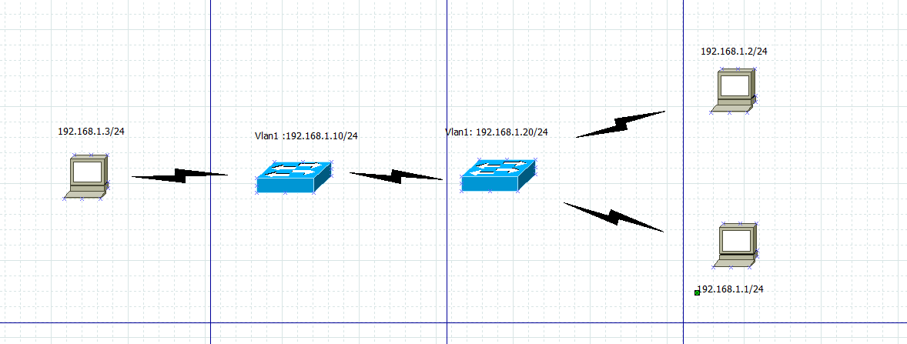

Mes Projets
Migration FAI & VoIP
Gestion de la migration vers un nouveau lien fibre et résolution des conflits de routage sur firewall WatchGuard impactant la téléphonie VoIP.

Industrialisation (FOG)
Automatisation du déploiement des postes de travail via le protocole PXE (Serveur FOG) et intégration de l'agent GLPI.

Déploiement Wi-Fi Roaming
Installation de bornes Wi-Fi optimisées en roaming pour garantir une connexion ininterrompue lors des déplacements sur le site de La Friche.

Transmission Audio & Redondance
Configuration de switchs de niveau 3 en STP reliés par double fibre optique pour assurer un failover automatique d'un flux audio UDP.

Épreuve E5 - Infra Réseau
Conception d'une architecture réseau sécurisée avec segmentation VLSM et inventaire des services (AD, Zabbix, GLPI, FOG).

Routage Statique
Configuration de deux routeurs avec chacun deux PC connectés pour permettre la communication entre les réseaux.

Commutation & SSH
Configuration réseau simple dans un réseau local (LAN), incluant des ordinateurs et des commutateurs (switches) interconnectés.